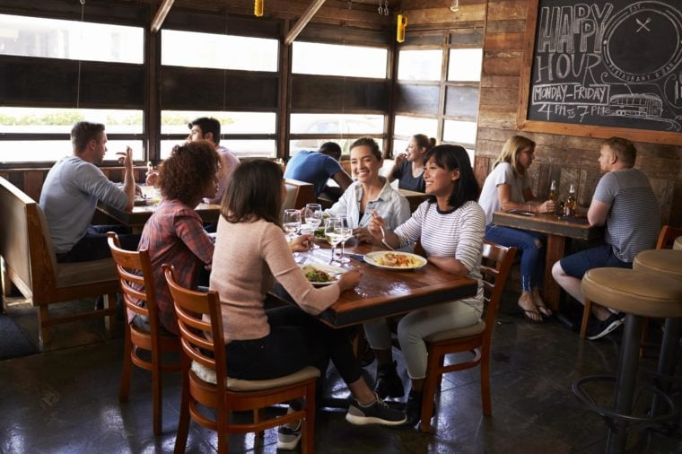

Welcome to The Dining Den, where culinary excellence meets warm hospitality! Situated in the heart of the city, our restaurant offers a delightful dining experience that will tantalize your taste buds and leave you craving for more. Whether you're looking for a romantic dinner for two, a family celebration, or a casual get-together with friends, The Dining Den is the perfect destination.
At The Dining Den, we pride ourselves on our carefully crafted menu, showcasing a fusion of global flavors and locally sourced ingredients. Our team of skilled chefs is dedicated to creating mouthwatering dishes that will satisfy even the most discerning palates. From delectable starters to succulent mains and irresistible desserts, our menu is designed to take you on a culinary journey that celebrates both tradition and innovation.
At The Dining Den, we believe that a great meal is best enjoyed with the perfect beverage. Our extensive drink menu features a curated selection of wines, craft beers, signature cocktails, and non-alcoholic options. Let our knowledgeable sommeliers guide you through the choices, or allow our mixologists to create a bespoke cocktail tailored to your preferences. Whatever your preference, we have the perfect libation to complement your meal.
Step into our inviting and elegant dining space, where contemporary design seamlessly blends with a cozy ambiance. Whether you choose our stylish indoor seating or prefer the al fresco experience on our charming patio, you'll find yourself immersed in an atmosphere of warmth and comfort. Our attentive staff is committed to providing impeccable service, ensuring that your dining experience is nothing short of exceptional.
